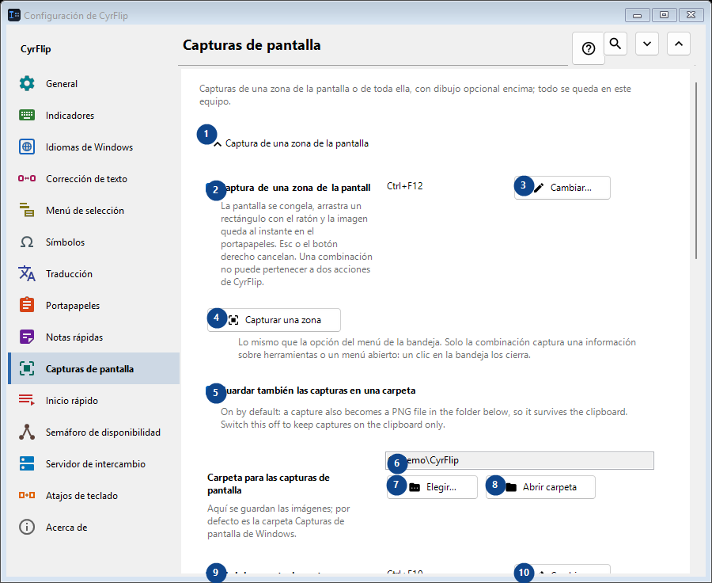
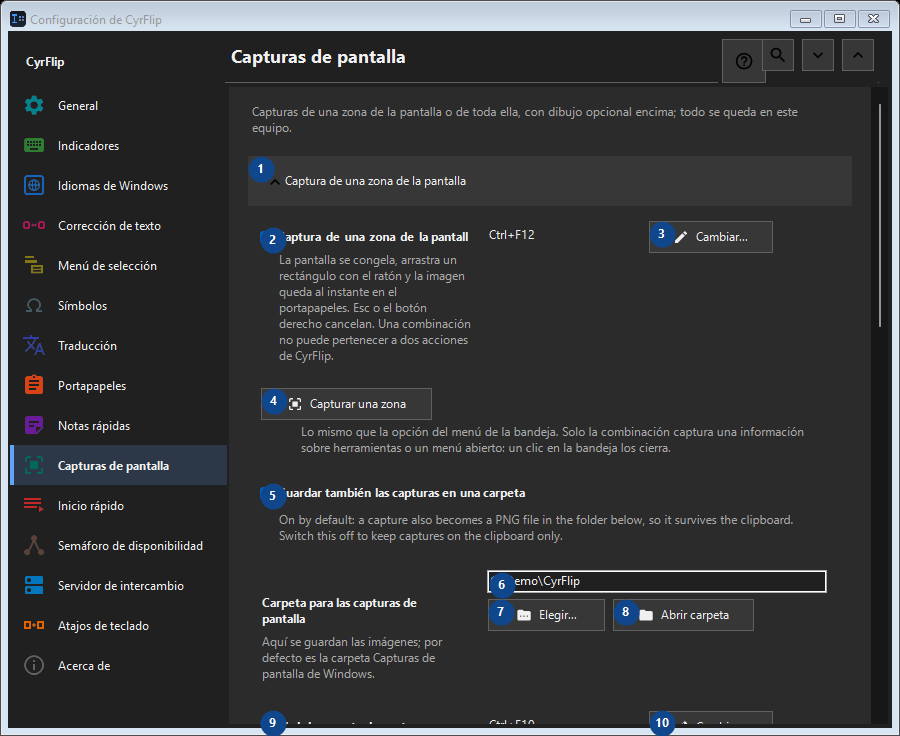

Capturas de pantalla
Para qué sirve
Capturas de una zona de la pantalla o de toda ella, con dibujo opcional encima; todo se queda en este equipo.


Orden de uso
Los ajustes se aplican de inmediato. No hay un orden obligatorio; usa los grupos siguientes.
Elementos
1. Captura de una zona de la pantalla
Usa este comando para la acción indicada. Lee cualquier confirmación antes de aceptarla.
Tus atajos2. Captura de una zona de la pantalla
La pantalla se congela, arrastra un rectángulo con el ratón y la imagen queda al instante en el portapapeles. Esc o el botón derecho cancelan. Una combinación no puede pertenecer a dos acciones de CyrFlip.
Tus atajos3. Cambiar - Captura de una zona de la pantalla
Usa este comando para la acción indicada. Lee cualquier confirmación antes de aceptarla.
Tus atajos4. Capturar una zona
Lo mismo que la opción del menú de la bandeja. Solo la combinación captura una información sobre herramientas o un menú abierto: un clic en la bandeja los cierra.
Tus atajos5. Guardar también las capturas en una carpeta
On by default: a capture also becomes a PNG file in the folder below, so it survives the clipboard. Switch this off to keep captures on the clipboard only.
Tus atajos6. Carpeta para las capturas de pantalla
Elige o introduce el valor de la etiqueta contigua. Revísalo antes de continuar.
Tus atajos7. Elegir - Carpeta para las capturas de pantalla
Usa este comando para la acción indicada. Lee cualquier confirmación antes de aceptarla.
Tus atajos8. Abrir carpeta - Carpeta para las capturas de pantalla
Usa este comando para la acción indicada. Lee cualquier confirmación antes de aceptarla.
Tus atajos9. Abrir la carpeta de capturas
Funciona mientras esté activado guardar las capturas en una carpeta. Abre la carpeta en la que CyrFlip guarda las capturas. Una combinación no se puede dar a dos acciones de CyrFlip.
Tus atajos10. Cambiar - Abrir la carpeta de capturas
Usa este comando para la acción indicada. Lee cualquier confirmación antes de aceptarla.
Tus atajos11. Captura de toda la pantalla
Usa este comando para la acción indicada. Lee cualquier confirmación antes de aceptarla.
Tus atajos12. Captura de toda la pantalla
Una pulsación: todas las pantallas se capturan como una sola imagen, directo al portapapeles. Nada se congela en la pantalla.
Tus atajos13. Cambiar - Captura de toda la pantalla
Usa este comando para la acción indicada. Lee cualquier confirmación antes de aceptarla.
Tus atajos14. Capturar toda la pantalla
Lo mismo que la opción del menú de la bandeja "Captura de toda la pantalla".
Tus atajos15. Dibujar sobre las capturas
Usa este comando para la acción indicada. Lee cualquier confirmación antes de aceptarla.
Tus atajos16. Dibujar sobre las capturas
Tras la captura, la imagen congelada se queda en la pantalla: dibuje óvalos, rectángulos, líneas y flechas.
Tus atajos17. Captura de una zona con dibujo
Capture a selected region and draw on it. One chord cannot belong to two CyrFlip actions.
Tus atajos18. Cambiar - Captura de una zona con dibujo
Usa este comando para la acción indicada. Lee cualquier confirmación antes de aceptarla.
Tus atajos19. Captura de toda la pantalla con dibujo
Capture every display as one picture and draw on it. One chord cannot belong to two CyrFlip actions.
Tus atajos20. Cambiar - Captura de toda la pantalla con dibujo
Usa este comando para la acción indicada. Lee cualquier confirmación antes de aceptarla.
Tus atajos21. Capturar una zona y dibujar
Lo mismo que la combinación "captura de una zona con dibujo".
Tus atajos22. Capturar toda la pantalla y dibujar
Lo mismo que la combinación "captura de toda la pantalla con dibujo".
Tus atajos